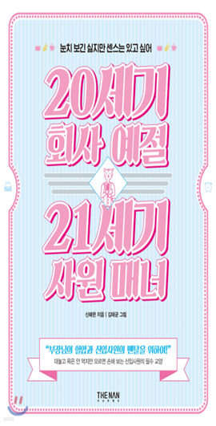

학습 목표
- 1. 상황 별 비즈니스 매너에 대한 지식을 습득하여 실제 비즈니스 상황에 효과적으로 적용할 수 있다.
- 2. 비즈니스 매너에 대한 지식을 바탕으로 비즈니스 성공을 거둘 수 있다.
교육 특징
-
1. 비즈니스 매너, 나는 얼만큼 알고 있을까?
나의 비즈니스 매너 테스트를 통해 학습자의 사고를 유도하고 헷갈릴 수 있는 비즈니스 매너에 대한 정답을 제공하는 강의
-
2. 빼곡한 활자로 제시되는 비즈니스 매너, 이제는 그만!
비즈니스 매너에 대한 다양한 사례를 말풍선 컨셉, 이미지, 일러스트를 활용해 제시하고 학습 내용을 구조화여 시각적 전달력을 강화한 강의
-
3. 복잡한 비즈니스 매너, 한 눈에 들어오도록 학습 내용을 정리하자!
실무에서 활용할 수 있도록 Good & Bad 두 가지로 구분하여 제시해 학습의 활용성을 제고한 강의
교육 대상
- 1. 비즈니스 매너가 어려운 신입 사원
- 2. 실제 비즈니스 환경에서 적용 가능한 비즈니스 매너가 궁금한 모든 임직원
강의 목차
- 제1장 비즈니스 매너의 의미
- 제2장 비즈니스 이미지 메이킹
- 제3장 비즈니스의 첫 단추
- 제4장 비즈니스 커뮤니케이션
- 제5장 비즈니스 비대면 커뮤니케이션
- 제6장 비즈니스 미팅 시 매너
- 제7장 상황 별 비즈니스 매너1
- 제8장 상황 별 비즈니스 매너2
강사 소개
강사명
김예진
경력
예스컨설팅 대표
몽골호텔협회 초빙교수
삼성물산 경험혁신아카데미 파트너
한국고용정보원 CS 컨설턴트
터칭 Touching(2023. 3, Book Insight)
워커빌리티(2025. 1, Bool Insight)
몽골호텔협회 초빙교수
삼성물산 경험혁신아카데미 파트너
한국고용정보원 CS 컨설턴트
터칭 Touching(2023. 3, Book Insight)
워커빌리티(2025. 1, Bool Insight)
참고 도서

도서명
20세기 회사 예절 21세기 사원 매너
저자명
신혜련
도서소개
이 책은 조직 적응에 어려움을 겪는 신입 및 2~3년 차 사원의 직장 '생존' 안내서입니다. '라떼'
논리 대신, 기성세대와 신규 세대가 함께 지켜야 할 최소한의 기본 매너를 다룹니다. 저자의 경험을 바탕으로 출근부터 퇴근까지 모든 업무 상황에 대처하는
구체적인 방법을 제시하여 직장 생활 기본기를 쉽고 재미있게 완성시킵니다.